Was wir tun
Unsere Aktivitäten
Wir arbeiten dort, wo demokratische Praxis konkret wird: in Seminarräumen, auf Podien, in Nachbarschaften – und dort, wo Menschen nach Krieg und Flucht medizinische Hilfe brauchen.
Projekt
Epithetik-Projekt
Kriegsverletzten ihr Gesicht zurückgeben
Gemeinsam mit dem Deutsch-Syrischen Verein zur Förderung der Freiheiten und Menschenrechte e. V. versorgen wir Kriegsverletzte in Idlib (Syrien) und Reyhanli (Türkei) epithetisch – und bilden syrische Kolleginnen und Kollegen vor Ort aus.
Projekt
Forum für Ärzte, Zahnärzte und Apotheker
Berufliche Integration im Gesundheitswesen
Das Deutsch-Syrische Forum bietet Medizinerinnen und Medizinern arabischer Herkunft eine Plattform zum Austausch über Approbation, Fachsprache und Berufserlaubnis – ergänzt um ein Mentorenprojekt. 2017 mit dem 1. Preis des Berliner Gesundheitspreises ausgezeichnet.

Politische Bildung und Podiumsdiskussionen
Vorträge, Seminare und Podiumsdiskussionen zu Demokratie, Menschenrechten und der Zukunft Syriens – unter anderem im Berliner Abgeordnetenhaus, mit Referentinnen und Referenten aus Wissenschaft, Politik und Zivilgesellschaft.
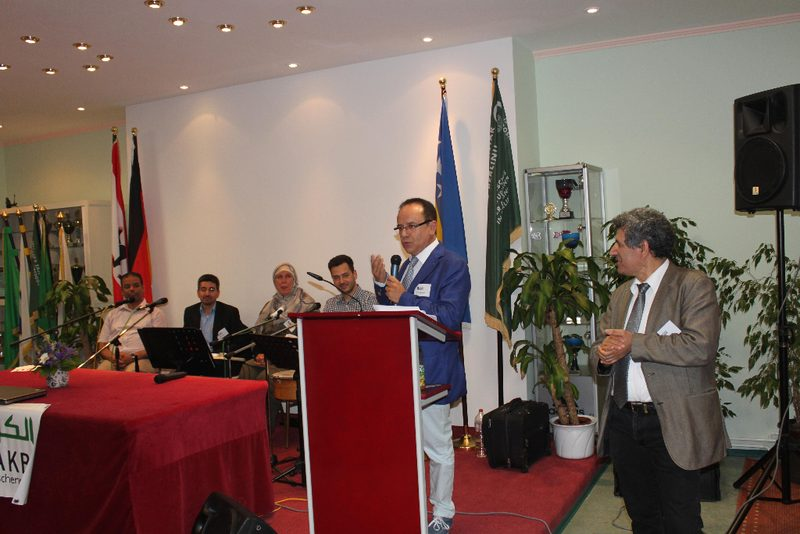
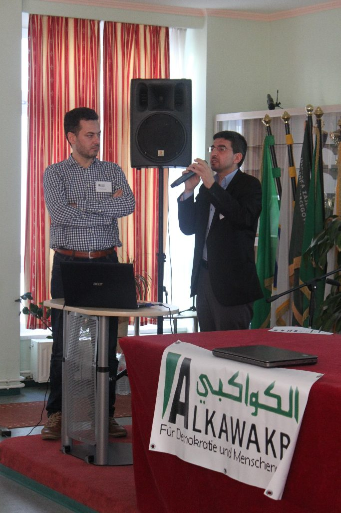
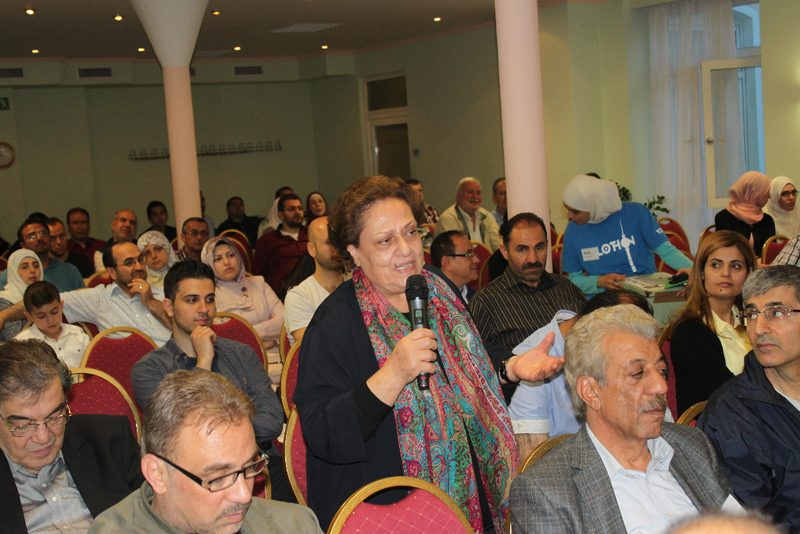
Seminare und Workshops
In kleinen Runden geht es um das, was Teilhabe im Alltag ausmacht: Rechte kennen, sich einbringen, Konflikte gewaltfrei austragen. Unsere Angebote richten sich besonders an Menschen arabischer Herkunft und an Neuzugewanderte.
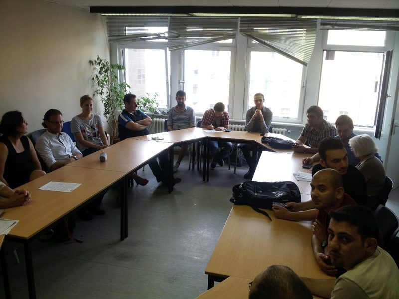
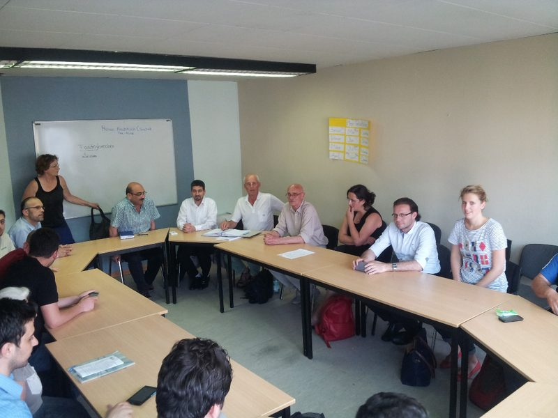
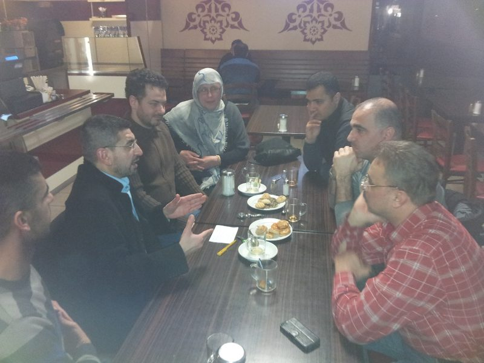
Begegnung in der Nachbarschaft
Nachbarschafts- und Begegnungsfeste, Kulturabende und Angebote für Kinder: Orte, an denen aus Nebeneinander ein Miteinander wird.
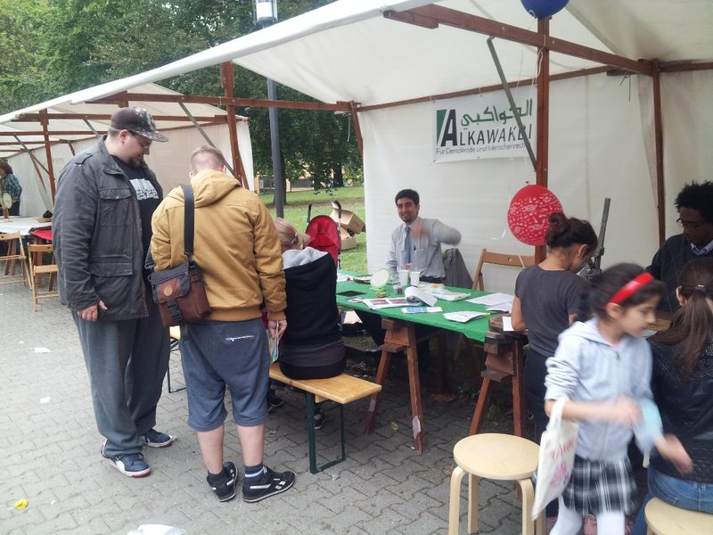
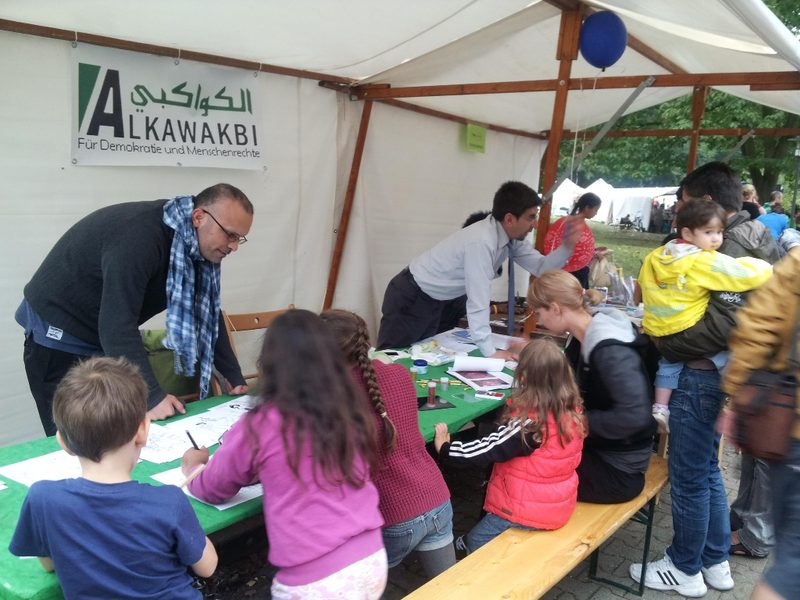
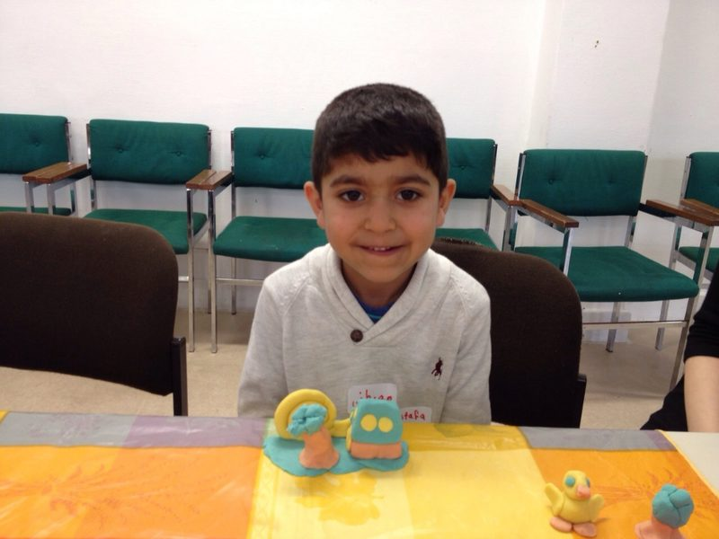
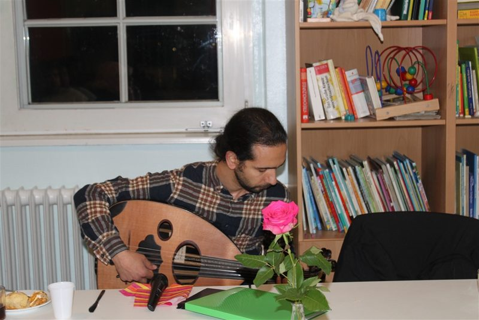
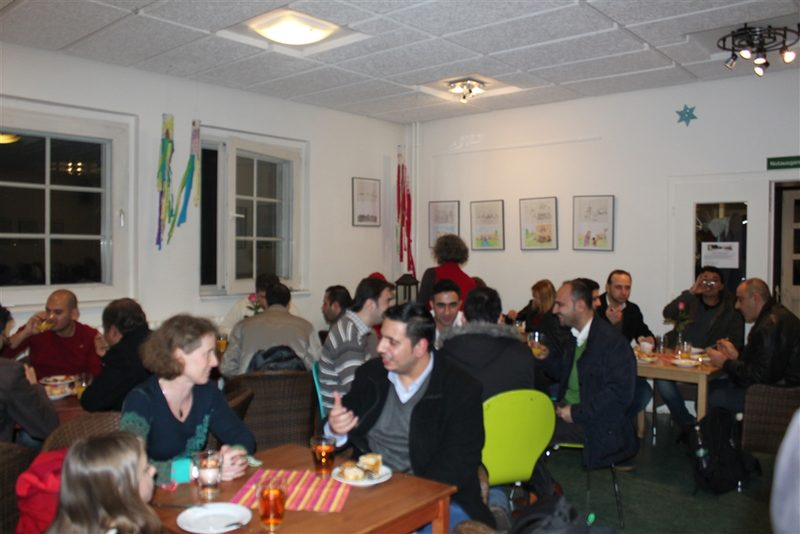

{kind=link}
{kind=link}
{kind=link}
{kind=link}
{kind=link}
{kind=link}
{kind=link}
{kind=link}
{kind=link}
{kind=link}
{kind=link}
{kind=link}
{kind=link}
Dabei sein
Sie möchten bei einer Veranstaltung dabei sein oder ein Projekt unterstützen?